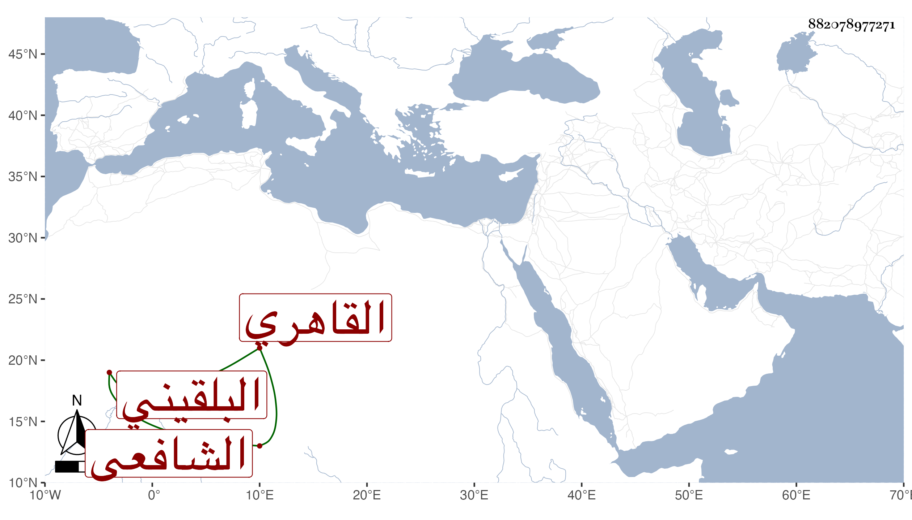

0902Sakhawi.DawLamic.ITO20230111-ara1.EIS1600.882078977271
Biography ID: 882078977271
47
محمد بن علي بن محمد بن عبد الرحمن بن عمر بن رسلان الكمال بن العلاء البلقيني الأصل القاهري الشافعي شقيق عبد الرحمن الماضي أمهما حبشية لأبيه . مولده في ذي القعدة سنة تسع وثلاثين ، نشأ في كنفهما فحفظ القرآن وغيره واشتغل على أخيه يسيرا وكذا حضر عند عمه أبي السعادات وجلس عند أبيه شاهدا ولم يحمد فيها ولا تصون وارتفق معها بالنسج على السرير وورث فتح الدين بن العلم البلقيني وعمه أبا السعادات وعمة أبي السعادات زينب إبنة الجلال بالعصوبة ومع ذلك فلم ينجح وأهانه السلطان بسبب شهادة في أثناء سنة خمس وتسعين .
